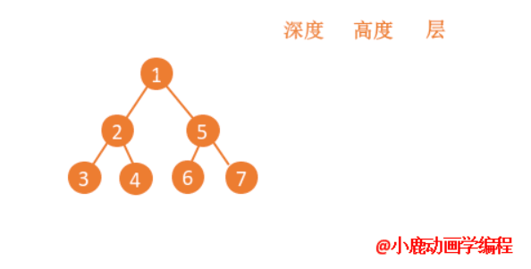
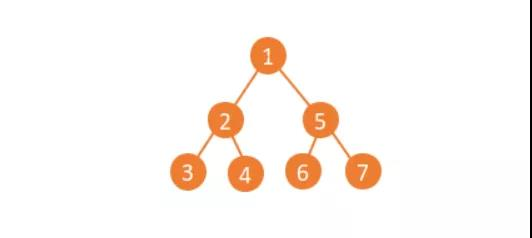
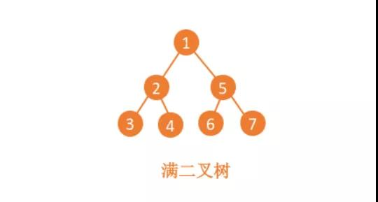
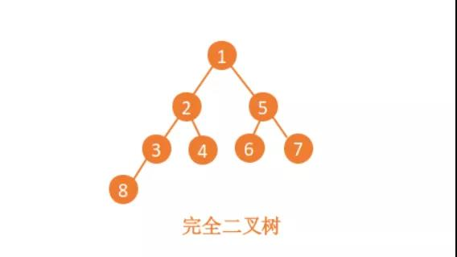
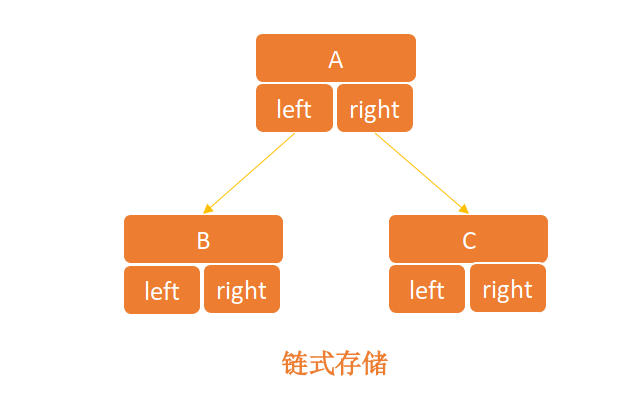
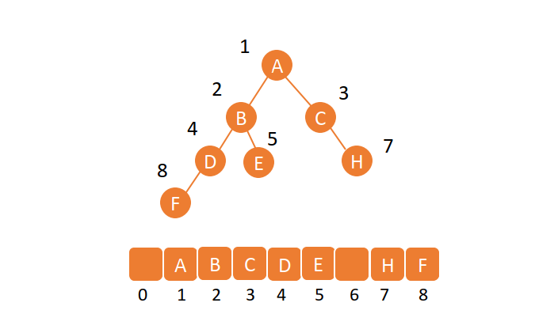
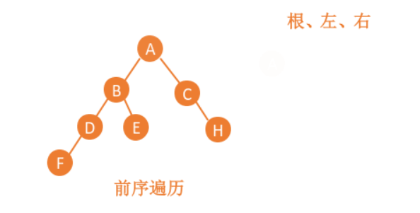
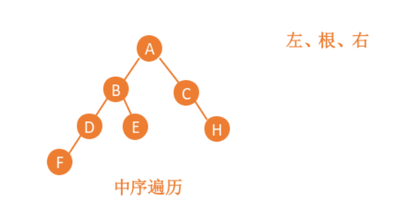
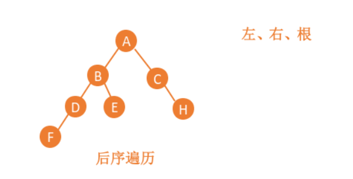

树结构
前言
本人平时学习及收集内容，欢迎参入一起讨论。
内容
- 树的分类
- 创建 BinarySearchTree 类
一、树的分类
- 二叉树：
Binary Search Tree - AVL 树：
AVL Tree - 红黑树：
Red-Black Tree - 线段树：
Segment Tree - 芬威克树：
Fenwick Tree
1.1 树的定义
第一想到的就是路边的树，有树干、树根、树叶，数据结构中的树也是这样延伸过来的，只不过专用名词不一样，直接上图。

树”这种数据结构真的很像我们现实生活中的“树”，这里面每个元素我们叫作“节点”；用来连线相邻节点之间的关系，我们叫作“父子关系”。
下面这幅图，A 节点就是 B 节点的父节点，B 节点是 A 节点的子节点。B、C、D 这三个节点的父节点是同一个节点，所以它们之间互称为兄弟节点。我们把没有父节点的节点叫作根节点，也就是图中的节点 E。我们把没有子节点的节点叫作叶子节点或者叶节点，比如图中的 G、H、I、J、K、L 都是叶子节点。
除此之外，关于“树”，还有三个比较相似的概念：高度（Height）、深度（Depth）、层（Level）。
高度
树的高度就是根节点到叶子节点的最长路径。节点的高度就是节点到叶子节点的高度。
深度
节点的深度就是该节点到根节点的路径，也就是边的数量
层
根节点为第一层，依次往下递增。

1.1 二叉树
二叉树的概念，就是给树做了一个限制，除了叶子结点，其余每个节点仅且只有两个子节点（也就是只两个叉）。

二叉树有两个很重要的形态就是满二叉树和完全二叉树。
满二叉树： 叶子节点全都在最底层，除了叶子节点之外，每个节点都有左右两个子节点，这种二叉树就叫作满二叉树。

完全二叉树： 叶子节点都在最底下两层 ，最后一层的叶子节点都靠左排列，并且除了最后一层，其他层的节点个数都要达到最大。

1.2 二叉树的存储方式有几种？
既然我们都基本了解了二叉树的概念和基本常识，那我们要用，就要进行存储，如何存储一颗二叉树呢？
所有基本常见的数据结构都是由数组和链表演变而来，栈有顺序栈和链式栈、队列有顺序队列和链式队列，那么树可以用数组存储也可以用链表存储呀。
链式存储法
基于指针的链式存储，每个树的节点都是由数据域和两个指针域组成的。数据域用来存储数据，指针域用来存储左右两个子节点。

顺序存储法
顺序存储就是用数组来存储的，虽然不如指针域那么直观，但是存储的方法挺好理解的。根节点存储在下标i=1的位置；左子节点存储在下标i*2=2的位置，右子节点存储在i*2+1=3的位置。

数组的方式存储不需要开辟额外的指针空间，但是数组需要的内存空间是连续的，如果连续的内存空间不足，就无法进行存储。
二、创建树
2.1 树的相关方法
insert(key)：向树中插入一个新的键。search(key)：在树中查找一个键，如果节点存在，则返回 true；如果不存在，则返回 false。remove(key)：从树中移除某个键
function BinarySearchTree(){
var Node = function(key){
this.key = key;
this.left = null;
this.right = null;
}
var root = null;
this.insert = function(key){
var newNode = new Node(key);
if(root === null){
root = newNode;
}else{
insertNode(root.newNode);
}
};
// 搜索一个特定的值
this.search = function(key){
return searchNode(root,key);
}
// 删除一个节点
this.remove = function(key){
root = removeNode(root,key);
}
}
var removeNode = function(node,key){
if(node === null){
return null;
}
if(key<node.key){
node.left = removeNode(node.left,key);
return node;
}else if(key>node.key){
node.right = removeNode(node.right,key);
return node;
}else{ // 健等于node.key
// 第一种情况——一种叶节点
if(node.left === null && node.right === null){
node = null;
return node;
}
// 第二种情况——一个只有一个子节点的节点
if(node.left === null){
node= node.right;
return node;
}else if(node.right===null){
node= node.left;
return node;
}
// 第三种情况——一个有两个节点的节点
var aux = findMinxNode(node.right);
node.key = aux.key8;
node.right = removeNode(node.right,aux.key);
return node;
}
}
var searchNode = function(node,key){
if(node === null){
return false;
}
if(key<node.key){
return searchNode(node.left,key);
}else if(key>node.key){
return searchNode(node.right,key);
}else{
return true;
}
}
function printNode(value){
console.log(value);
}
var insertNode = function(node,newNode){
if(newNode.key < node.key){
if(node.left === null){
node.left = newNode;
}else{
insertNode(node.left,newNode);
}
}else{
if(node.right === null){
node.right = newNode;
}else{
insertNode(node.right,newNode);
}
}
}
2
3
4
5
6
7
8
9
10
11
12
13
14
15
16
17
18
19
20
21
22
23
24
25
26
27
28
29
30
31
32
33
34
35
36
37
38
39
40
41
42
43
44
45
46
47
48
49
50
51
52
53
54
55
56
57
58
59
60
61
62
63
64
65
66
67
68
69
70
71
72
73
74
75
76
77
78
79
80
81
82
83
84
85
86
87
88
89
90
91
92
93
94
95
96
97
98
三、二叉树的遍历
共有四种遍历的方式，分别为前序遍历、中序遍历、后序遍历、按层遍历。
inOrderTraverse：通过中序遍历方式遍历所有节点。preOrderTraverse：通过先序遍历方式遍历所有节点。postOrderTraverse：通过后序遍历方式遍历所有节点。min：返回树中最小的值/键。max：返回树中最大的值/键。
3.1 前序遍历相关代码
前序遍历是指，对于树中的任意节点来说，先打印这个节点，然后再打印它的左子树，最后打印它的右子树。
// 前序遍历
this.preOrderTraverse = function(callback){
preOrderTraverseNode(root,callback);
}
var preOrderTraverseNode = function(node,callback){
if(node!==null){
callback(node.key);
preOrderTraverseNode(node.left,callback);
preOrderTraverseNode(node.right,callback);
}
};
2
3
4
5
6
7
8
9
10
11
12

3.2 中序遍历相关代码
中序遍历是指，对于树中的任意节点来说，先打印左子树，然后再打印它本身，最后打印它的右子树。
// 中序遍历
this.inOrderTraverse = function(callback){
inOrderTraverseNode(root,callback);
}
var inOrderTraverseNode = function(node,callback){
if(node !== null){
inOrderTraverseNode(node.left,callback);
callback(node.key);
inOrderTraverseNode(node.right,callback);
}
};
2
3
4
5
6
7
8
9
10
11
12

3.3 后序遍历相关代码
后序遍历是指，对于树中的任意节点来说，先打印它的左子树，然后再打印它的右子树，最后打印它节点本身。
// 后序遍历
this.postOrderTraverse = function(callback){
postOrderTraverseNode(root,callback);
}
var postOrderTraverseNode = function(node,callback){
if(node!==null){
postOrderTraverseNode(node.left,callback);
postOrderTraverseNode(node.right,callback);
callback(node.key);
}
}
2
3
4
5
6
7
8
9
10
11

3.4 最小的值/键
this.min = function(){
return minNode(root);
}
// 最小值
var minNode = function(node){
if(node){
while(node && node.left !== null){
node = node.left;
}
return node.key;
}
return null;
};
2
3
4
5
6
7
8
9
10
11
12
13
14
3.5 最大的值/键
this.max = function(){
return maxNode(root);
}
// 最大值
var maxNode = function(node){
if(node){
while(node && node.right !==null){
node = node.right;
}
return node.key;
}
return null;
};
2
3
4
5
6
7
8
9
10
11
12
13
四、二叉查找树
参考资料
- 《学习 JavaScript 数据结构与算法》
- 二叉树有几种存储方式？(上)
- 二叉树基础（上）：什么样的二叉树适合用数组来存储？
联系作者
平凡世界，贵在坚持。